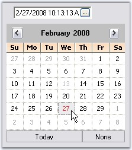

The below events are discussed in the event section.
This event is handled whenever a child button of a ButtonEdit control is clicked. It gives ClickedButton member which lets you customize the button that is clicked.
The below code changes the alignment of the button that is clicked at runtime.
|
[C#]
this.buttonEdit2.ButtonClicked +=new ButtonClickedEventHandler(buttonEdit2_ButtonClicked); private void buttonEdit2_ButtonClicked(object sender, ButtonClickedEventArgs e) { //Changing the button alignment of the clicked button e.ClickedButton.ButtonAlign = ButtonAlignment.Left; } |
|
[VB.NET]
AddHandler Me.buttonEdit2.ButtonClicked, AddressOf buttonEdit2_ButtonClicked Private Sub buttonEdit2_ButtonClicked(ByVal sender As Object, ByVal e As ButtonClickedEventArgs) 'Changing the button alignment of the clicked button e.ClickedButton.ButtonAlign = ButtonAlignment.Left End Sub |
The below table list the events that are raised for border changes.
|
ButtonEdit Properties |
Description |
|
Border3DStyleChanged |
Raised when Border3DStyle property of ButtonEdit control is changed. |
|
BorderSidesChanged |
Raised when BorderSides property of ButtonEdit control is changed. |
|
[C#]
private void buttonEdit1_Border3DStyleChanged(object sender, EventArgs e) { Console.WriteLine("3D border styles is changed"); }
private void buttonEdit1_BorderSidesChanged(object sender, EventArgs e) { Console.WriteLine(" Border sides is changed"); } |
|
[VB.NET]
Private Sub buttonEdit1_Border3DStyleChanged(ByVal sender As Object, ByVal e As EventArgs) Console.WriteLine("3D border styles is changed") End Sub
Private Sub buttonEdit1_BorderSidesChanged(ByVal sender As Object, ByVal e As EventArgs) Console.WriteLine(" Border sides is changed") End Sub |
The below table list the events that are available for the ButtonEdit Child Buttons control.
|
ButtonEditChildButton Events |
Description |
|
Click |
Occurs when the control is clicked. This event calls the ButtonEdit.HandleChildButtonClicked method. Using this method, we can access the corresponding control and customize it. |
|
TextChanged |
Raised when Text property value is changed. This event calls HandleChildButtonTextChanged method. Using this method, we can access the corresponding control and customize it. |
|
MouseDown |
Handled when the mouse is over the control and when mouse button is pressed. This event calls HandleChildButtonMouseDown. Using this method, we can access the corresponding control and customize it. |
|
MouseUp |
Handled when the mouse is over the control and mouse button is released. This event calls HandleChildButtonMouseUp. Using this method, we can access the corresponding control and customize it. |
|
MouseEnter |
Raised when the mouse pointer enters the control. This event calls HandleChildButtonMouseEnter method. Using this method, we can access the corresponding control and customize it. |
|
MouseLeave |
Raised when the mouse pointer leaves the control. This event calls HandleChildButtonMouseLeave method. Using this method, we can access the corresponding control and customize it. |
|
MouseHover |
Raised when the mouse pointer rests the control. This event calls HandleChildButtonMouseHover method. Using this method, we can access the corresponding control and customize it. |
|
BackColorChanged |
Raised when BackColor property of the ButtonEdit control is changed. This event calls HandleChildButtonBackColorChanged method. Using this method, we can access the corresponding control and customize it. |
Displaying a Calendar Popup in a ButtonEdit Control
Using ButtonEdit Child button click event, we can display a CalendarPopup at a specified location. It can be done using the below steps.
Using CalendarPopup
1. Create an instance of CalendarPopup control.
|
[C#]
private Syncfusion.Windows.Forms.Tools.CalendarPopup calendarPop1; calendarPop1=new Syncfusion.Windows.Forms.Tools.CalendarPopup (); |
|
[VB.NET]
Private calendarPop1 As Syncfusion.Windows.Forms.Tools.CalendarPopup Private calendarPop1 = New Syncfusion.Windows.Forms.Tools.CalendarPopup() |
2. Declare an instance of MonthCalendarAdv control and add it to the CalendarPopup.
|
[C#]
private Syncfusion.Windows.Forms.Tools.MonthCalendarAdv MonthCal; MonthCal=new Syncfusion.Windows.Forms.Tools.MonthCalendarAdv(); this.MonthCal.AutoSize = false; calendarPop1.AutoSize = false; calendarPop1.Size = new Size(200, 200); this.MonthCal.Size = new Size(200, 200);
this.calendarPop1.Controls.Add(MonthCal); |
|
[VB.NET]
Private MonthCal As Syncfusion.Windows.Forms.Tools.MonthCalendarAdv Private MonthCal = New Syncfusion.Windows.Forms.Tools.MonthCalendarAdv() Me.MonthCal.AutoSize = False calendarPop1.AutoSize = False calendarPop1.Size = New Size(200, 200) Me.MonthCal.Size = New Size(200, 200)
Me.calendarPop1.Controls.Add(MonthCal) |
3. Handle the Click event of buttonEditChildButton1 to display the Calendar as follows.
|
[C#]
private void buttonEditChildButton1_Click(object sender, System.EventArgs e) { this.calendarPop1.Visible =true; this.calendarPop1.ShowPopup (new Point(200,200)); } |
|
[VB.NET]
Private Sub buttonEditChildButton1_Click(ByVal sender As Object, ByVal e As System.EventArgs) Me.calendarPop1.Visible = True Me.calendarPop1.ShowPopup(New Point(200, 200)) End Sub |
4. The event DateSelected can also be handled to display the selected date in the textbox of ButtonEdit control.
|
[C#]
this.MonthCal.DateSelected+=new EventHandler(MonthCal_DateSelected);
private void MonthCal_DateSelected(object sender,System.EventArgs e) { this.buttonEdit1.TextBox.Text= this.MonthCal.Value.ToString(); } |
|
[VB.NET]
Private Me.MonthCal.DateSelected+= New EventHandler(MonthCal_DateSelected)
Private Sub MonthCal_DateSelected(ByVal sender As Object, ByVal e As System.EventArgs) Me.buttonEdit1.TextBox.Text = Me.MonthCal.Value.ToString() End Sub |

Figure 179: ButtonEdit databound with CalendarPopup Control